Resolution Bot saved $500k in under 9 months and creates delightful experiences for our customers
At a glance
High ticket volumes, repetitive questions and the need for 24/7 help were stretching support teams thin.
That meant slower responses, overwhelmed teams and unhappy customers. Traditional support leans on people for everything, which is expensive and doesn’t scale. A resolution bot takes routine queries off the queue with instant answers, so support teams can spend their time on the complex issues.
Understanding the problem
We knew the support portal needed a capable bot. Building one meant understanding how much of the volume was repetitive, and how businesses thought about it. We interviewed existing customers and business stakeholders to understand the constraints, and spent time with support leads to see where a bot could step in instead of a human agent.
“I’m a big fan of utilising technology, because you can hire more people to answer customers’ questions, but it’s expensive and unscalable.”
Operations Manager, customer interview
User surveys
We surveyed customer service teams, users and stakeholders to understand their needs.
Does your team need a chatbot?
- Yes89%
- No11%
How should the chatbot act?
- Human42%
- Bot68%
How many attempts before I’m directed to an agent?
- One55%
- Two34%
Are you okay answering a few questions?
- Yes68%
How would you like your assistance?
- Detailed guides33%
- Step-by-step67%
I need chat history
- Yes76%
- No24%
How often would you give feedback on the chatbot?
- Always9%
- Very often21%
- Often39%
- Rarely8%
- Never23%
What would make you trust a chatbot more?
- Accuracy43%
- Transparency11%
- Personalisation4%
- Response time27%
- Improvement15%
Risk analysis
A chatbot gets smarter over time. Trying to do too much at the outset often leads to failure.
What it has to get right
- Understanding the customer’s query is essential.
- Most people prefer human agents, expecting people to solve problems more efficiently.
- It should carry the brand’s personal touch.
- Users should reach it from anywhere without interrupting their work.
- Protecting user data and assuring confidentiality.
What can go wrong
- Misinterpreted inputs.
- Alienating customers who prefer human interaction.
- Failing or delaying escalation of complex issues to human agents.
- Missing the emotional context or nuance of a concern.
- Lost trust in the service and damage to reputation.
Competitor analysis
Zendesk leads on AI features and integrations at a higher price, suiting large enterprises. Intercom balances capability and cost for mid-sized businesses. Freshdesk is cost-effective with solid features, but lacks advanced capabilities like sentiment analysis.
| Feature | Zendesk | Intercom | Freshdesk |
|---|---|---|---|
| AI-powered chatbot | Yes | Yes | Yes |
| 24/7 availability | Yes | Yes | Yes |
| Customisable flows | Yes | Yes | Yes |
| Multilingual support | Yes | Yes | Yes |
| CRM integration | Zendesk CRM | Intercom CRM | Freshsales CRM |
| Self-service portal | Yes | Yes | Yes |
| Proactive messaging | Yes | Yes | Yes |
| Ticket creation via bot | Yes | Yes | Yes |
| Knowledge base integration | Yes | Yes | Yes |
| Live agent handoff | Yes | Yes | Yes |
| Reporting and analytics | Yes | Yes | Yes |
| No-code builder | Yes | Yes | Yes |
| Sentiment analysis | Yes | Yes | No |
| Cost | Higher price point | Mid-range | Affordable |
| Multi-channel | Email, social | Chat, social | Omnichannel |
Support ticket history analysis
We used data analytics to find trends, recurring issues and pain points in 12 months of ticket history.
- Data extraction
- Collected ticket data from clients and the internal support platform for the past 12 months.
- Categorisation
- Used NLP to classify tickets into categories like password resets, billing and feature requests.
- Trend analysis
- Reported on volume fluctuations, peak hours and seasonal trends.
- Resolution time
- Measured time to resolution per category to find where automation would help most.
- Sentiment
- Applied AI sentiment analysis to gauge frustration and key areas of dissatisfaction.
- Escalation paths
- Mapped how often tickets escalated between support levels to tune conversations.
- Troubleshooting48.8%
- Forms24.3%
- Billing14.6%
- Feature requests12.3%
Nearly half of all tickets were troubleshooting: the clearest place for a bot to start.
User research
Interviews with ticket requestors, support agents, support leads and executives showed what both internal teams and customers wanted:
Automated responses that resolve repetitive or basic issues
Integrations across platforms, so self-service starts from anywhere
24/7 support with an immediate response to every query
Sentiment analysis, so every customer gets a personal experience
Data security and trust for users and partners
Tickets created automatically from the conversation
A minimal, easy UI for a smooth experience with the bot
Accurate, relevant knowledge base recommendations to raise deflection
In-depth reporting on feedback and article accuracy to improve the models
Meeting users where they are
After the surveys and customer discussions, we identified the areas of focus and how to shape the bot. We started with a basic flow to ideate on with the ML engineering team.
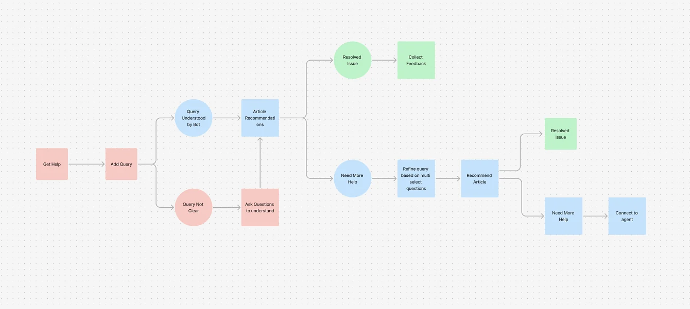
Help when and where it’s needed
Discoverability mattered most: customers should always be able to get help. Today 95% of inbound queries come through the floating icon, which shows how many people prefer support right inside the product, at the moment they need it.
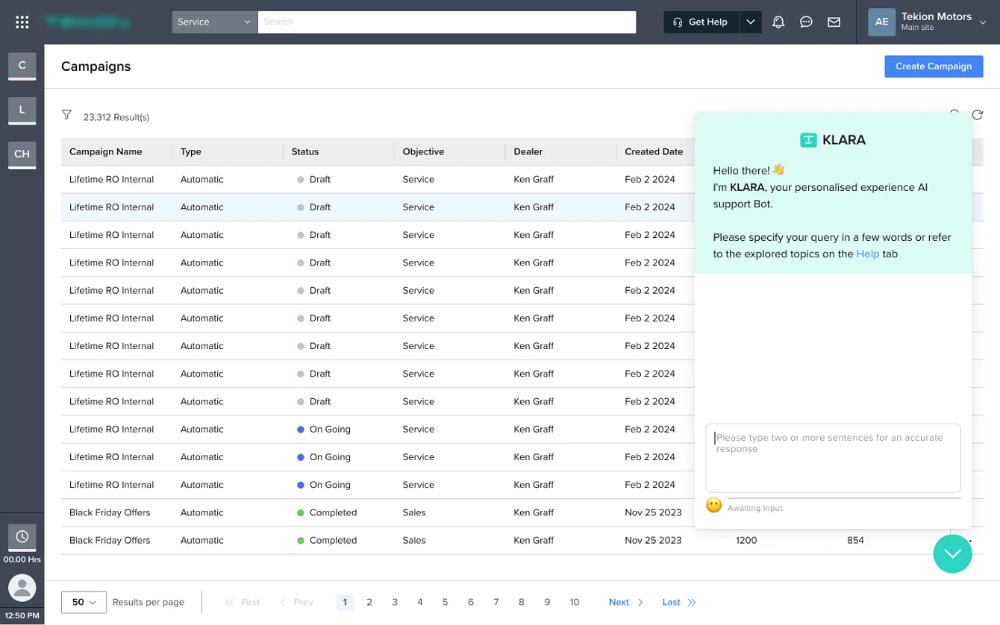
A detailed query is everything
The bot needs a detailed query to find the right article. To nudge people to write one, the input gives live feedback as they type.
How do I change🧐 Add more information
How do I change the status🙂 Good! Add more detail
How do I change the status of the vehicle☺️ You’re almost there!
How do I change the status of the vehicle in vehicle inventory?🥳 Perfect!
Responses
The bot fetches the best article and shares it as easy-to-read steps. The user can mark it helpful, ask for more help, or browse related articles without typing again.
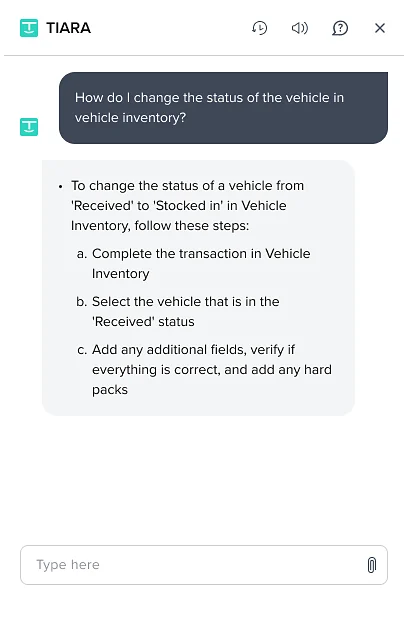
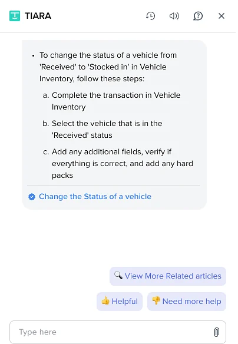
Clicking the article name opens the full guide inside the bot, with images that walk through it in depth.
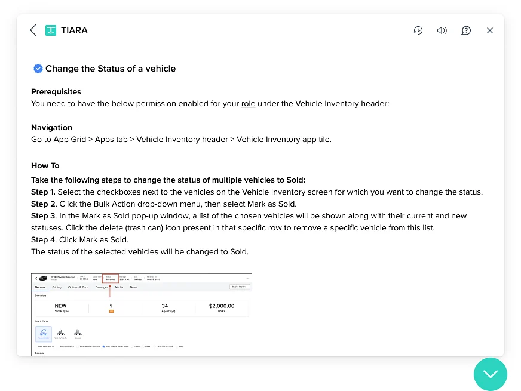
When the query isn’t clear
When the bot can’t match a query to an article, it asks focused questions to narrow down the module or component the user needs help with.
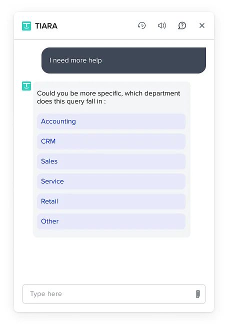
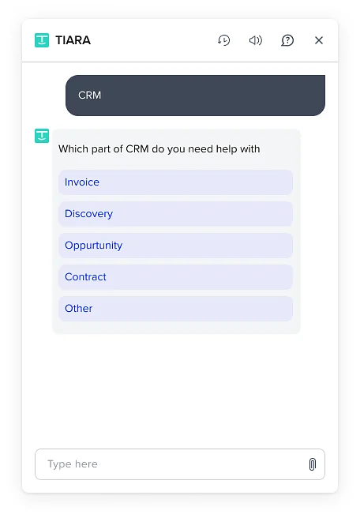
Sentiment analysis
The bot had to feel friendly, which meant reading how the user feels. The worse the sentiment, the sooner a human steps in.
Feedback
To track how the bot performs, a short feedback step follows every resolved chat. That feedback shaped the knowledge base and improved the bot over time.
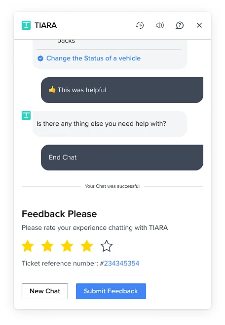
Chat history
Many users told us they wanted to return to an earlier issue with the whole conversation intact. Now they can reopen a closed chat without explaining it all again.
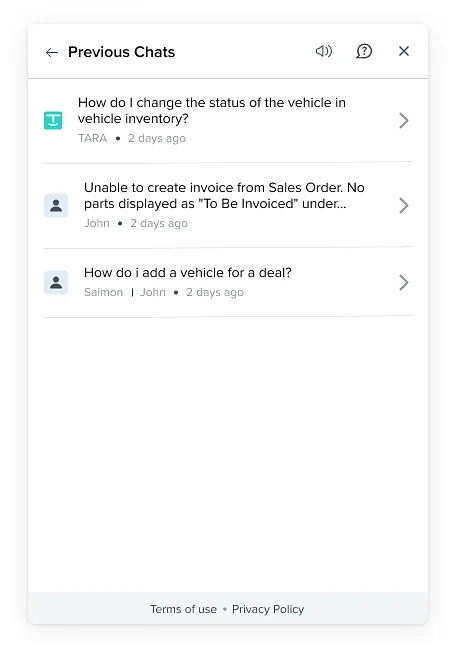
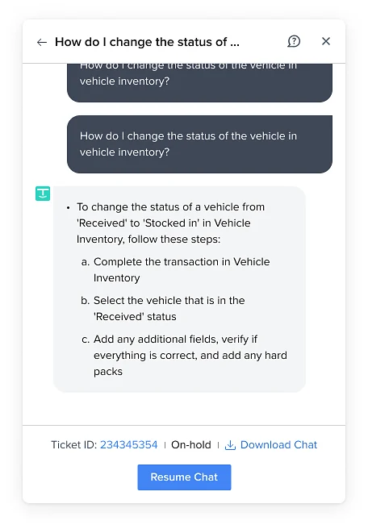
Wizard of Oz testing
We prototyped real-time AI interactions and tested them with stakeholders before engineering handoff, to catch loopholes and experience gaps early.
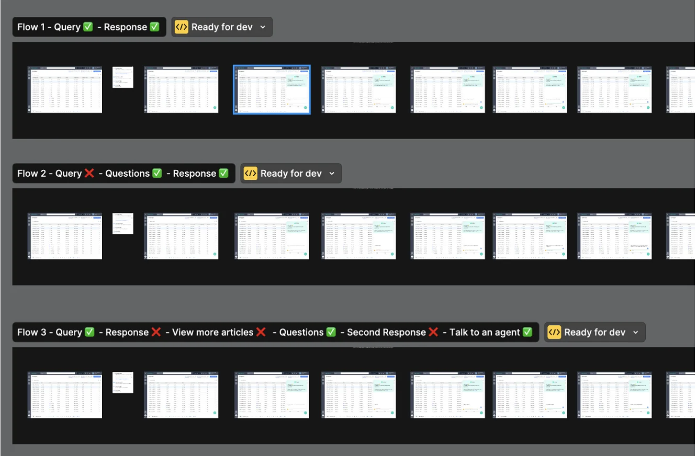
Results
After release, users took some time to get used to the bot, but over 9 months the deflection rate rose from 7% to 34.8%.
Support teams scaled up without adding headcount.
Learnings
- The bot got smarter over time as resolutions added up.
- Design friendly conversation paths and keep responses clear.
- Don’t overdo it. Striking the right balance avoids over-automation and keeps users happy.
- Knowing the KPIs, like resolution rate and satisfaction, was key to the bot’s success.
Future state
Confidence scores with sources on every recommendation
Proactive responses that adapt to preferences, past interactions and sentiment
AI-generated articles created and updated from queries and chat history
AI email and ticket replies with suggested fixes